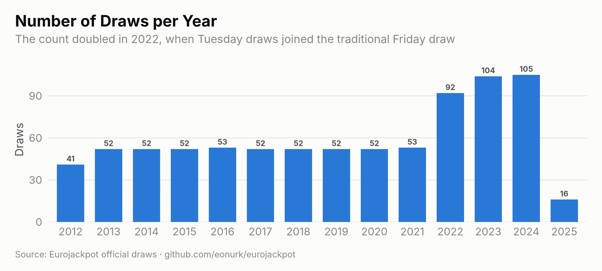
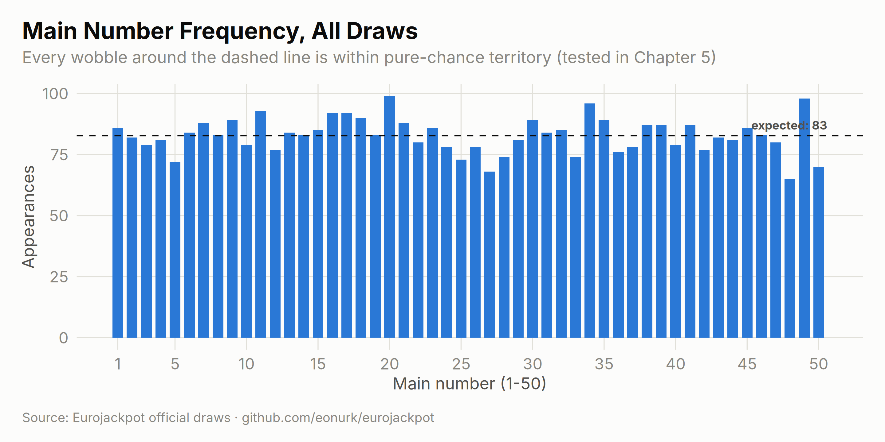
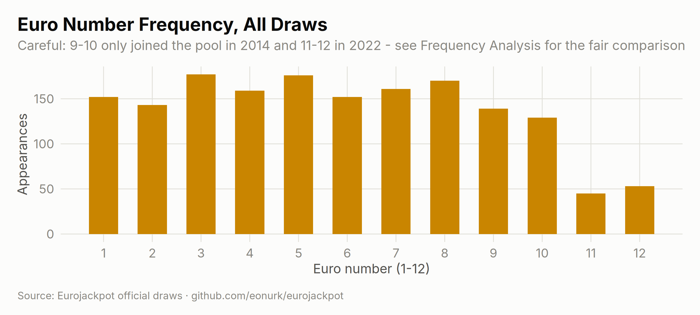
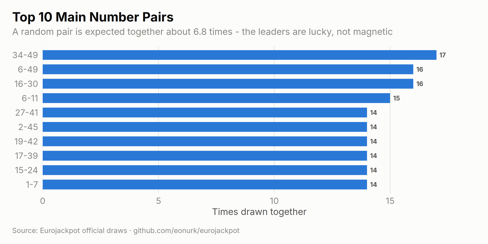
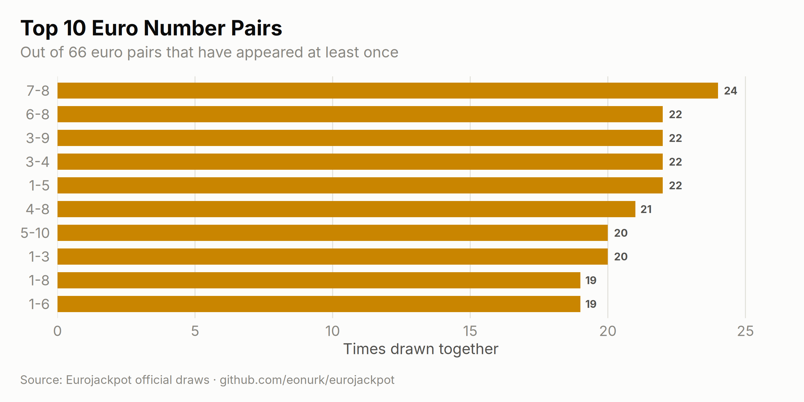
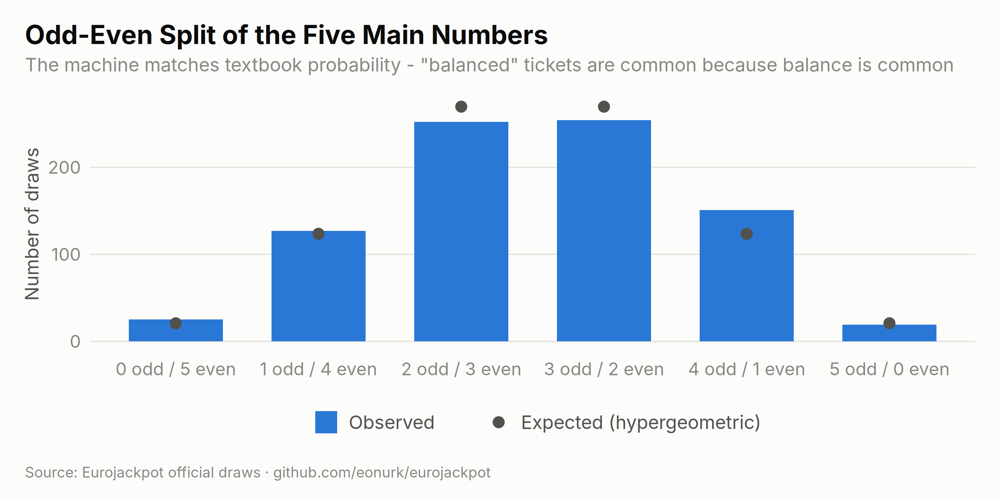
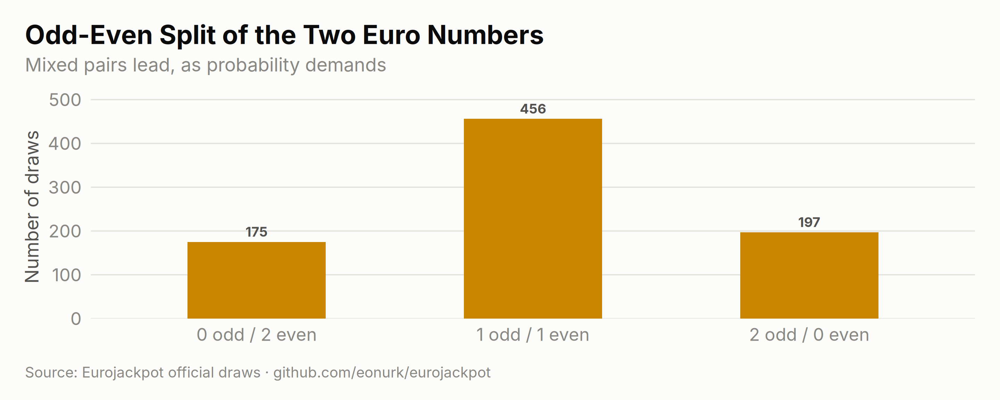

# Read the CSV file
results <- read.csv("eurojackpot_results.csv", stringsAsFactors = FALSE)
# Convert date format to day, month, year
results$draw_date <- as.Date(results$draw_date)
results$day <- format(results$draw_date, "%d")
results$month <- format(results$draw_date, "%m")
results$year <- format(results$draw_date, "%Y")
# Split main numbers into separate columns
main_numbers_split <- strsplit(gsub("\"", "", results$main_numbers), ",")
main_numbers_matrix <- do.call(rbind, main_numbers_split)
colnames(main_numbers_matrix) <- paste0("main_", 1:5)
results <- cbind(results, main_numbers_matrix)
# Split euro numbers into separate columns
euro_numbers_split <- strsplit(gsub("\"", "", results$euro_numbers), ",")
euro_numbers_matrix <- do.call(rbind, euro_numbers_split)
colnames(euro_numbers_matrix) <- paste0("euro_", 1:2)
results <- cbind(results, euro_numbers_matrix)
# Convert number columns to numeric
for (col in c(paste0("main_", 1:5), paste0("euro_", 1:2))) {
results[[col]] <- as.numeric(results[[col]])
}
n <- nrow(results)Before hunting for patterns, meet the raw material. The dataset is beautifully simple: one row per draw — a date, five main numbers, two euro numbers — stretching back to the very first Eurojackpot draw in March 2012. That’s it. Everything on this site is squeezed out of those three columns.
summary_df <- data.frame(
Metric = c("Total number of draws", "Date range", "Number of years covered", "Balls drawn in total"),
Value = c(
format(n, big.mark = ","),
paste(format(min(results$draw_date), "%b %d, %Y"), "to", format(max(results$draw_date), "%b %d, %Y")),
length(unique(results$year)),
format(n * 7, big.mark = ",")
)
)
knitr::kable(summary_df,
caption = "Dataset summary",
col.names = c("Metric", "Value"),
align = c("l", "l")
)| Metric | Value |
|---|---|
| Total number of draws | 828 |
| Date range | Mar 23, 2012 to Feb 25, 2025 |
| Number of years covered | 14 |
| Balls drawn in total | 5,796 |
yearly <- results %>% count(year)
ggplot(yearly, aes(x = year, y = n)) +
geom_col(fill = ej_blue, width = 0.72) +
geom_text(aes(label = n), vjust = -0.55, size = 3.2, color = ej_ink2, fontface = "bold") +
scale_y_continuous(expand = expansion(mult = c(0, 0.12))) +
labs(
title = "Number of Draws per Year",
subtitle = "The count doubled in 2022, when Tuesday draws joined the traditional Friday draw",
x = NULL, y = "Draws", caption = ej_caption
) +
theme(panel.grid.major.x = element_blank())
How often has each ball come out of the machine? For the main numbers a fair machine spreads appearances around 83 per number over the whole history:
main_freq_df <- data.frame(number = 1:50, frequency = tabulate(
as.integer(as.matrix(results[, paste0("main_", 1:5)])),
nbins = 50
))
expected_main <- 5 * n / 50
ggplot(main_freq_df, aes(x = number, y = frequency)) +
geom_col(fill = ej_blue, width = 0.75) +
geom_hline(yintercept = expected_main, linetype = "dashed", color = ej_ink, linewidth = 0.6) +
annotate("text",
x = 50.6, y = expected_main, label = sprintf("expected: %.0f", expected_main),
hjust = 1, vjust = -0.7, size = 3.4, color = ej_ink2, fontface = "bold"
) +
scale_x_continuous(breaks = c(1, seq(5, 50, by = 5))) +
labs(
title = "Main Number Frequency, All Draws",
subtitle = "Every wobble around the dashed line is within pure-chance territory (tested in Chapter 5)",
x = "Main number (1-50)", y = "Appearances", caption = ej_caption
)
euro_freq_df <- data.frame(number = 1:12, frequency = tabulate(
c(results$euro_1, results$euro_2),
nbins = 12
))
ggplot(euro_freq_df, aes(x = number, y = frequency)) +
geom_col(fill = ej_gold, width = 0.6) +
scale_x_continuous(breaks = 1:12) +
labs(
title = "Euro Number Frequency, All Draws",
subtitle = "Careful: 9-10 only joined the pool in 2014 and 11-12 in 2022 - see Frequency Analysis for the fair comparison",
x = "Euro number (1-12)", y = "Appearances", caption = ej_caption
)
Which numbers like to travel together? With 1,225 possible main-number pairs and only 828 draws, even the “most frequent” pair is a rare guest:
# Function to count pairs of numbers
count_pairs <- function(data, columns) {
pairs <- combn(columns, 2, function(cols) {
pair_data <- data[, cols]
return(paste(pair_data[, 1], pair_data[, 2], sep = "-"))
}, simplify = FALSE)
all_pairs <- unlist(pairs)
pair_counts <- sort(table(all_pairs), decreasing = TRUE)
return(pair_counts)
}
main_pairs <- count_pairs(results, paste0("main_", 1:5))
top_main_pairs <- head(main_pairs, 10)
top_pairs_df <- data.frame(
pair = names(top_main_pairs),
count = as.integer(top_main_pairs)
)
ggplot(top_pairs_df, aes(x = count, y = reorder(pair, count))) +
geom_col(fill = ej_blue, width = 0.68) +
geom_text(aes(label = count), hjust = -0.45, size = 3.3, color = ej_ink2, fontface = "bold") +
scale_x_continuous(expand = expansion(mult = c(0, 0.1))) +
labs(
title = "Top 10 Main Number Pairs",
subtitle = sprintf(
"A random pair is expected together about %.1f times - the leaders are lucky, not magnetic",
n * choose(5, 2) / choose(50, 2)
),
x = "Times drawn together", y = NULL, caption = ej_caption
) +
theme(panel.grid.major.y = element_blank())
euro_pairs <- count_pairs(results, paste0("euro_", 1:2))
top_euro_pairs <- head(euro_pairs, 10)
euro_pairs_df <- data.frame(
pair = names(top_euro_pairs),
count = as.integer(top_euro_pairs)
)
ggplot(euro_pairs_df, aes(x = count, y = reorder(pair, count))) +
geom_col(fill = ej_gold, width = 0.68) +
geom_text(aes(label = count), hjust = -0.45, size = 3.3, color = ej_ink2, fontface = "bold") +
scale_x_continuous(expand = expansion(mult = c(0, 0.1))) +
labs(
title = "Top 10 Euro Number Pairs",
subtitle = sprintf("Out of %d euro pairs that have appeared at least once", length(euro_pairs)),
x = "Times drawn together", y = NULL, caption = ej_caption
) +
theme(panel.grid.major.y = element_blank())
Players love “balanced” tickets. The machine doesn’t care — but it does obey the hypergeometric distribution, which says a 3-2 or 2-3 odd-even split should dominate:
results$main_odd_count <- rowSums(results[, paste0("main_", 1:5)] %% 2 == 1)
odd_even_df <- data.frame(
odd = 0:5,
observed = as.integer(table(factor(results$main_odd_count, levels = 0:5))),
expected = dhyper(0:5, 25, 25, 5) * n
)
ggplot(odd_even_df, aes(x = factor(odd))) +
geom_col(aes(y = observed, fill = "Observed"), width = 0.66) +
geom_point(aes(y = expected, color = "Expected (hypergeometric)"), size = 3.4) +
scale_fill_manual(values = c("Observed" = ej_blue)) +
scale_color_manual(values = c("Expected (hypergeometric)" = ej_ink2)) +
scale_x_discrete(labels = paste0(0:5, " odd / ", 5:0, " even")) +
labs(
title = "Odd-Even Split of the Five Main Numbers",
subtitle = "The machine matches textbook probability - \"balanced\" tickets are common because balance is common",
x = NULL, y = "Number of draws", caption = ej_caption
) +
theme(panel.grid.major.x = element_blank())
results$euro_odd_count <- rowSums(results[, paste0("euro_", 1:2)] %% 2 == 1)
euro_oe <- data.frame(
odd = 0:2,
observed = as.integer(table(factor(results$euro_odd_count, levels = 0:2)))
)
ggplot(euro_oe, aes(x = factor(odd), y = observed)) +
geom_col(fill = ej_gold, width = 0.5) +
geom_text(aes(label = observed), vjust = -0.55, size = 3.4, color = ej_ink2, fontface = "bold") +
scale_x_discrete(labels = paste0(0:2, " odd / ", 2:0, " even")) +
scale_y_continuous(expand = expansion(mult = c(0, 0.12))) +
labs(
title = "Odd-Even Split of the Two Euro Numbers",
subtitle = "Mixed pairs lead, as probability demands",
x = NULL, y = "Number of draws", caption = ej_caption
) +
theme(panel.grid.major.x = element_blank())